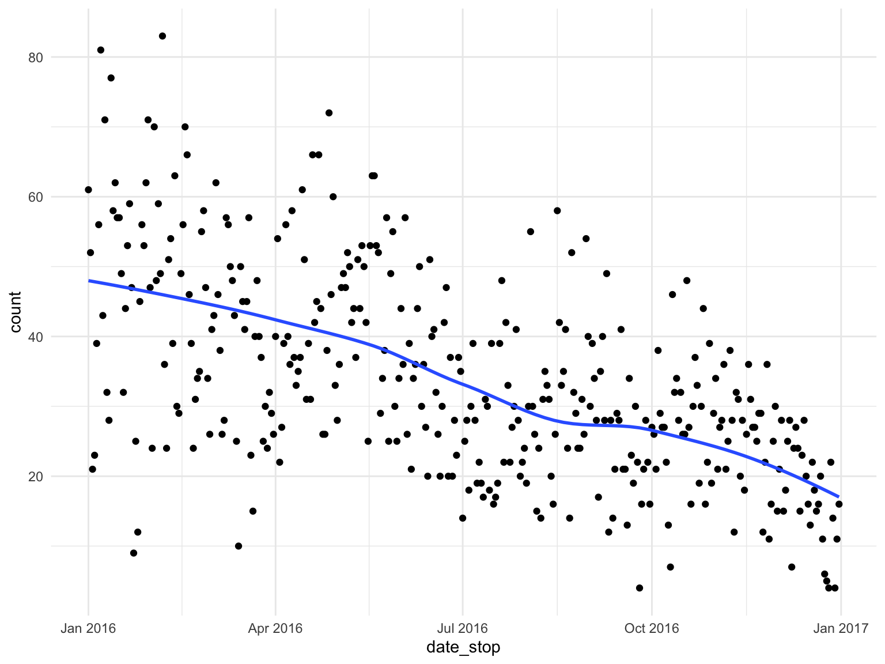
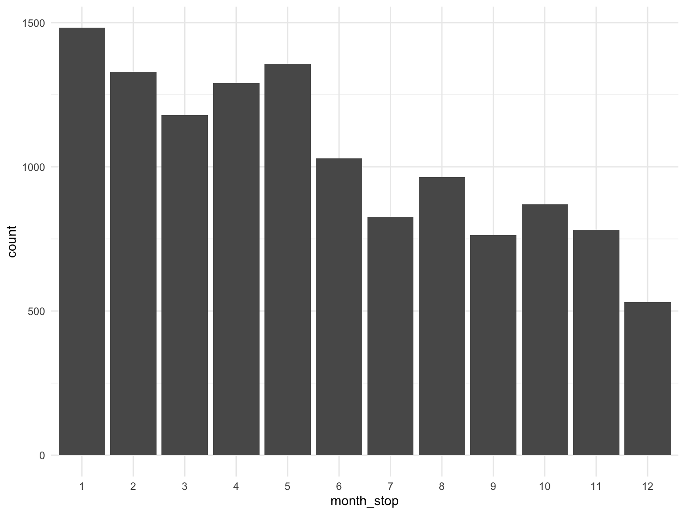
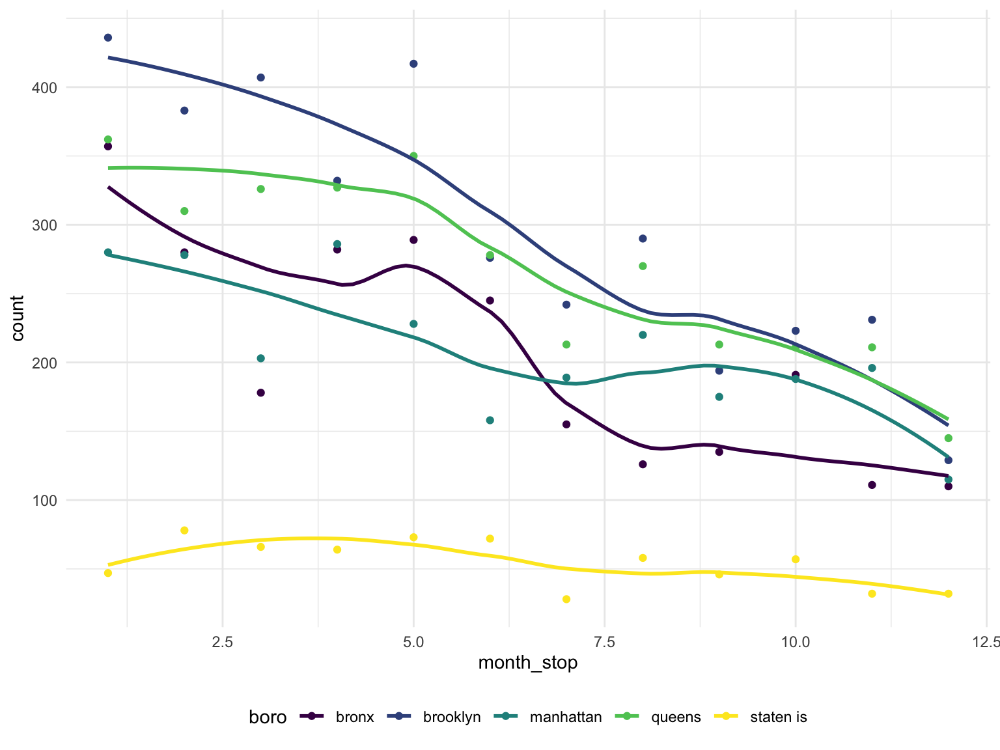
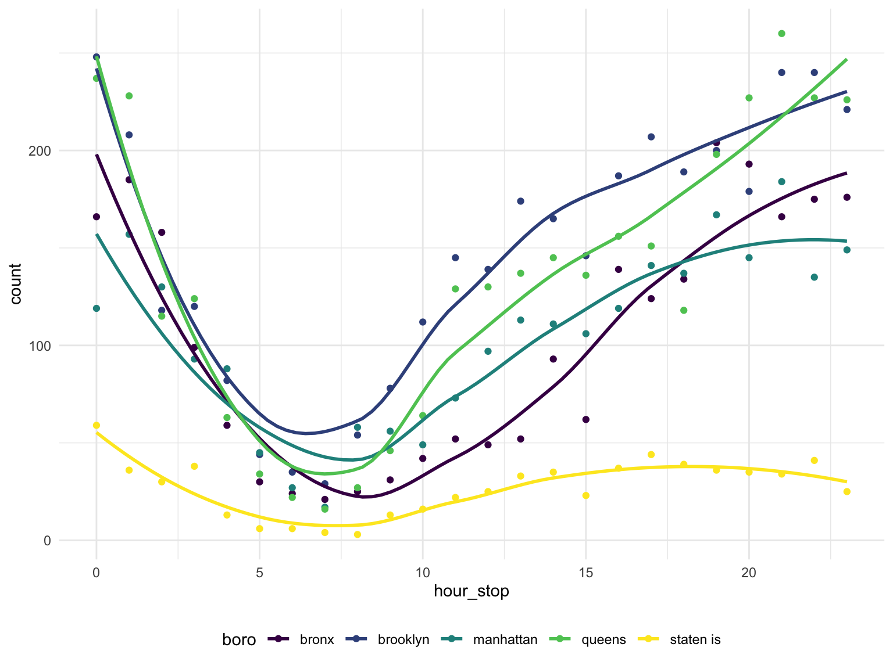
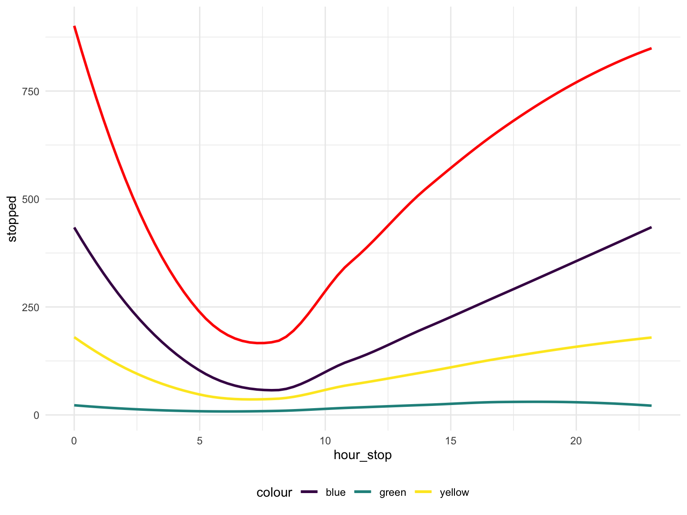

Group 13 Final Project
cs3779, kd2640, ob2305, mp3745, lef2147
2019-12-05
Rough Outline of Project:
- Describe the goal/motivation of the project; have some stats and facts to explain our purpose in investigating this dataset
- Describe the dataset: where is it from, what does it contain
- Review the questions we intend on answering
- Exploratory Data Analysis
- Give an overview of the demographics of our dataset, any conclusion we make is only relevant to those who were stopped which is why it is good to give an idea of who is represented
- histogram of race/build/etc.
- distribution of continuous variables
- Logistic Regression
- odds of frisked
- odds of arrest
- Trends over time
- could maybe find a way to test this, i.e. linear regression, is the slope equal to zero, or something of that nature. the plot shows a funnel pattern so maybe we could look into that more
- other things
- Findings/Discussion
Read in and tidy the data
The following code:
- Reads in the data
- Renames columns to be more informative
- Combines height columns into a single height in inches
- Converts date_stop to date data type
- Converts time_stop to time data type
- Recodes the values in categorical columns to be more informative
- Selects column subset for further analysis
# Read in data
stop_frisk_df =
# Read in data from internet
GET("https://www1.nyc.gov/assets/nypd/downloads/excel/analysis_and_planning/stop-question-frisk/sqf-2016.csv") %>%
content("parsed") %>%
# Clean and fix names of columns
janitor::clean_names() %>%
rename(
precinct = pct,
date_stop = datestop,
time_stop = timestop,
stop_in_out = inout,
obs_time_min = perobs,
stop_time_min = perstop,
arst_made = arstmade,
off_in_unif = offunif,
hair_col = haircolr,
eye_col = eyecolor,
other_feature = othfeatr,
boro = city
) %>%
mutate(
# Combine height columns
height_inch = ht_feet * 12 + ht_inch,
# Convert date to proper format
date_stop = mdy(date_stop),
# Convert time to proper format
time_stop = hm(time_stop / 100),
# Recode to be more informative
stop_in_out = recode(stop_in_out, "I" = "inside", "O" = "outside"),
race = recode(
race,
"A" = "asian/pacific islander",
"B" = "black",
"I" = "american indian/alaska native",
"P" = "black-hispanic",
"Q" = "white-hispanic",
"W" = "white",
"U" = "unknown",
"Z" = "other"
),
hair_col = recode(
hair_col,
"BA" = "bald",
"BK" = "black",
"BL" = "blond",
"BR" = "brown",
"DY" = "dyed",
"FR" = "frosted",
"GY" = "gray",
"RA" = "red",
"SN" = "sandy",
"SP" = "salt and pepper",
"WH" = "white",
"XX" = "unknown",
"ZZ" = "other",
),
eye_col = recode(
eye_col,
"BK" = "black",
"BL" = "blue",
"BR" = "brown",
"DF" = "different",
"GR" = "green",
"GY" = "gray",
"HA" = "hazel",
"MA" = "maroon",
"PK" = "pink",
"VI" = "violet",
"XX" = "unknown",
"Z" = "other",
),
build = recode(
build,
"H" = "heavy",
"M" = "medium",
"T" = "thin",
"U" = "muscular",
"Z" = "unknown"
),
# change boro columns to lowercase for consistency
boro = tolower(boro),
# change character datatypes to numeric
age = as.numeric(age),
obs_time_min = as.numeric(obs_time_min),
stop_time_min = as.numeric(stop_time_min)
) %>%
# select columns for further analysis
select(precinct, date_stop, time_stop, stop_in_out, obs_time_min, stop_time_min, arst_made, off_in_unif, frisked,
searched, rf_vcrim, rf_othsw, rf_attir:ac_evasv, cs_furtv:cs_other, rf_knowl, sb_hdobj:sb_admis, rf_furt,
rf_bulg, sex, race, age, height_inch, weight:build, boro, xcoord, ycoord) %>%
# change all columns that have Y/N to 1/0
mutate_at(vars(arst_made:rf_bulg), funs(recode(., "Y" = "1", "N" = "0"))) %>%
# change binary columns to numeric instead of character
mutate_at(vars(arst_made:rf_bulg), funs(as.numeric(.))) %>%
# converts all character variables to factors (this does the same as the for loop)
mutate_if(is.character, as.factor) %>%
# remove the single row of NAs
filter(!is.na(build))Evaluating Missing Data and Categorical Data
table(stop_frisk_df$race)##
## american indian/alaska native asian/pacific islander
## 38 737
## black black-hispanic
## 6498 873
## other unknown
## 140 95
## white white-hispanic
## 1270 2753table(stop_frisk_df$hair_col)##
## bald black blond brown
## 391 9046 143 2323
## dyed gray other red
## 4 125 59 39
## salt and pepper sandy unknown
## 74 2 198table(stop_frisk_df$eye_col)##
## black blue brown different gray green hazel
## 955 206 10839 1 14 103 113
## other unknown
## 54 119table(stop_frisk_df$build)##
## heavy medium muscular thin unknown
## 1209 5470 133 5382 210# we should consider consolidating categories
colSums(is.na(stop_frisk_df))## precinct date_stop time_stop stop_in_out obs_time_min
## 0 0 0 0 0
## stop_time_min arst_made off_in_unif frisked searched
## 23 0 0 0 0
## rf_vcrim rf_othsw rf_attir cs_objcs cs_descr
## 0 0 0 0 0
## cs_casng cs_lkout rf_vcact cs_cloth cs_drgtr
## 0 0 0 0 0
## ac_evasv cs_furtv rf_rfcmp ac_cgdir rf_verbl
## 0 0 0 0 0
## cs_vcrim cs_bulge cs_other rf_knowl sb_hdobj
## 0 0 0 0 0
## sb_outln sb_admis rf_furt rf_bulg sex
## 0 0 0 0 0
## race age height_inch weight hair_col
## 0 34 0 0 0
## eye_col build boro xcoord ycoord
## 0 0 0 351 351# we should consider removing variable other_feature (11637 missing obs)
# age has 35 missing values, consider multiple imputation methods here
# Looks like there is also an entire row of NA'sLooking at stops over time
- Over a year
- By time of day
# Number of stops per day
stop_frisk_df %>%
group_by(date_stop) %>%
summarize(
count = n()
) %>%
ggplot(aes(x = date_stop, y = count)) +
geom_point() +
geom_smooth(se = FALSE)
# Number of stops per month
stop_frisk_df %>%
mutate(
month_stop = factor(month(date_stop))
) %>%
filter(
month_stop != is_null(month_stop)
) %>%
group_by(month_stop) %>%
summarize(
count = n()
) %>%
ggplot(aes(x = month_stop, y = count)) +
geom_bar(stat = "Identity") 
# Number of stops per day (broken down by boro)
stop_frisk_df %>%
mutate(
month_stop = month(date_stop)
) %>%
filter(
month_stop != is_null(month_stop)
) %>%
group_by(month_stop, boro) %>%
summarize(
count = n()
) %>%
ggplot(aes(x = month_stop, y = count, color = boro)) +
geom_point() +
geom_smooth(se = FALSE) 
# Number of stops per hour over the day
stop_frisk_df %>%
mutate(
hour_stop = hour(time_stop),
part_of_day = cut(hour_stop, breaks = c(0, 5, 12, 17, 21, 24), labels = c("Night", "Morning", "Afternoon", "Evening", "Night"), right = FALSE)
) %>%
select(hour_stop, part_of_day) %>%
group_by(hour_stop, part_of_day) %>%
summarize(
count = n()
) %>%
ggplot(aes(x = hour_stop, y = count)) +
geom_bar(stat = "Identity", aes(fill = part_of_day)) +
geom_smooth(se = FALSE)
# Number of stops per hour over the day (broken down by boro)
stop_frisk_df %>%
mutate(
hour_stop = hour(time_stop)
) %>%
group_by(hour_stop, boro) %>%
summarize(
count = n()
) %>%
ggplot(aes(x = hour_stop, y = count, color = boro)) +
geom_point() +
geom_smooth(se = FALSE)
This code chunk looks at the number of people stopped, frisked, frisked & searched, and searched over a single day
stop_frisk_df %>%
filter(date_stop != is.na(date_stop)) %>%
mutate(
hour_stop = hour(time_stop)
) %>%
group_by(hour_stop, frisked, searched) %>%
summarize(
count = n()
) %>%
pivot_wider(
names_from = frisked:searched,
values_from = count
) %>%
rename(
"stopped" = "0_0",
"frisked" = "1_0",
"searched" = "0_1",
"frisk_and_search" = "1_1"
) %>%
mutate(
searched = replace_na(searched, 0),
stopped = replace_na(stopped, 0),
frisked = replace_na(frisked, 0),
frisk_and_search = replace_na(frisk_and_search, 0),
stopped = stopped + searched + frisked + frisk_and_search
) %>%
ggplot(aes(x = hour_stop, y = stopped)) +
geom_smooth(se = FALSE, color = 'red') +
geom_smooth(aes(y = frisked, color = 'blue'), se = FALSE) +
geom_smooth(aes(y = searched, color = 'green'), se = FALSE) +
geom_smooth(aes(y = frisk_and_search, color = 'yellow'), se = FALSE) 
Logistic Regression Dataset - not sure if we want to use this for overall but didnt want to completely change the code above without asking everyone
stop_frisk_log = stop_frisk_df %>% mutate(
race = recode(
race,
"asian/pacific islander" = "other",
"black" = "black",
"american indian/alaska native" = "other",
"black-hispanic" = "black-hispanic",
"white-hispanic" = "white-hispanic",
"white" = "white",
"unknown" = "other",
"other" = "other"
),
hair_col = recode(
hair_col,
"dyed" = "other",
"frosted" = "other",
"gray" = "other",
"red" = "other",
"sandy" = "other",
"salt and pepper" = "other",
"white" = "other",
"unknown" = "other",
"ZZ" = "other"
),
eye_col = recode(
eye_col,
"different" = "other",
"green" = "other",
"gray" = "other",
"hazel" = "other",
"maroon" = "other",
"pink" = "other",
"violet" = "other",
"unknown" = "other"
),
build = recode(
build,
"muscular" = "other",
))Building a model using only characteristics, demographics, and location as predictors for frisked - assess multicolinearity to determine if there are any variables that exhibit high correlation - We will remove any variables that exhibit signs of multicollinearity - From this model, we can assess of those who were stopped, what are the odds of getting frisked based on certain characteristics, demographics and location predictors - IMPORTANT: we cannot make any causal statements from this model ‘i.e. you have a higher odds of getting stopped if you are X race’ because everyone in this dataset was stopped
model_1 = glm(frisked ~ sex + race + age + height_inch + weight + hair_col + eye_col + boro + build + stop_in_out + precinct + off_in_unif, family = binomial, data = stop_frisk_log)
car::vif(model_1)## GVIF Df GVIF^(1/(2*Df))
## sex 1.179297 2 1.042091
## race 1.561548 4 1.057291
## age 1.222201 1 1.105532
## height_inch 1.320364 1 1.149071
## weight 1.567631 1 1.252051
## hair_col 1.406664 4 1.043575
## eye_col 1.235170 3 1.035828
## boro 29.189812 4 1.524593
## build 1.395551 4 1.042541
## stop_in_out 1.074392 1 1.036529
## precinct 25.307892 1 5.030695
## off_in_unif 1.097859 1 1.047788# Based on the GVIF, we will remove boro
model_2 = glm(frisked ~ sex + race + age + height_inch + weight + hair_col + eye_col + build + stop_in_out + precinct + off_in_unif, family = binomial, data = stop_frisk_log)
car::vif(model_2)## GVIF Df GVIF^(1/(2*Df))
## sex 1.173811 2 1.040877
## race 1.433039 4 1.046001
## age 1.219806 1 1.104448
## height_inch 1.316565 1 1.147417
## weight 1.564742 1 1.250896
## hair_col 1.397985 4 1.042768
## eye_col 1.230990 3 1.035243
## build 1.384006 4 1.041459
## stop_in_out 1.067664 1 1.033278
## precinct 1.113891 1 1.055410
## off_in_unif 1.059472 1 1.029307# no more collinearity problems
summary(model_2)##
## Call:
## glm(formula = frisked ~ sex + race + age + height_inch + weight +
## hair_col + eye_col + build + stop_in_out + precinct + off_in_unif,
## family = binomial, data = stop_frisk_log)
##
## Deviance Residuals:
## Min 1Q Median 3Q Max
## -2.0482 -1.2804 0.7371 0.9372 1.9748
##
## Coefficients:
## Estimate Std. Error z value Pr(>|z|)
## (Intercept) -1.7286908 0.4367304 -3.958 7.55e-05 ***
## sexM 0.8342144 0.0775060 10.763 < 2e-16 ***
## sexZ 0.6674880 0.2875712 2.321 0.020280 *
## raceblack 0.4450129 0.0739403 6.019 1.76e-09 ***
## raceblack-hispanic 0.4535358 0.1011500 4.484 7.33e-06 ***
## racewhite -0.0454750 0.0932264 -0.488 0.625698
## racewhite-hispanic 0.4371895 0.0798993 5.472 4.46e-08 ***
## age -0.0108360 0.0017841 -6.074 1.25e-09 ***
## height_inch 0.0274359 0.0064336 4.264 2.00e-05 ***
## weight 0.0004723 0.0006257 0.755 0.450349
## hair_colblack 0.1138623 0.1116728 1.020 0.307915
## hair_colblond -0.2342093 0.2132065 -1.099 0.271982
## hair_colbrown -0.0075590 0.1183843 -0.064 0.949089
## hair_colother -0.0427759 0.1417515 -0.302 0.762830
## eye_colblue 0.1284665 0.1700807 0.755 0.450053
## eye_colbrown -0.0105313 0.0727950 -0.145 0.884971
## eye_colother -0.0887821 0.1293596 -0.686 0.492511
## buildmedium -0.2527791 0.0758386 -3.333 0.000859 ***
## buildother -0.4490363 0.1932803 -2.323 0.020166 *
## buildthin -0.2165816 0.0807537 -2.682 0.007318 **
## buildunknown -0.5533496 0.1618418 -3.419 0.000628 ***
## stop_in_outoutside 0.3561322 0.0489741 7.272 3.55e-13 ***
## precinct -0.0024775 0.0005978 -4.144 3.41e-05 ***
## off_in_unif -0.6270943 0.0438455 -14.302 < 2e-16 ***
## ---
## Signif. codes: 0 '***' 0.001 '**' 0.01 '*' 0.05 '.' 0.1 ' ' 1
##
## (Dispersion parameter for binomial family taken to be 1)
##
## Null deviance: 16164 on 12369 degrees of freedom
## Residual deviance: 15410 on 12346 degrees of freedom
## (34 observations deleted due to missingness)
## AIC: 15458
##
## Number of Fisher Scoring iterations: 4# Remove hair and eye color because all categories within them are highly unsignificant
model_3 = glm(frisked ~ sex + race + age + height_inch + weight + build + stop_in_out + precinct + off_in_unif, family = binomial, data = stop_frisk_log)
summary(model_3)##
## Call:
## glm(formula = frisked ~ sex + race + age + height_inch + weight +
## build + stop_in_out + precinct + off_in_unif, family = binomial,
## data = stop_frisk_log)
##
## Deviance Residuals:
## Min 1Q Median 3Q Max
## -2.0497 -1.2793 0.7362 0.9364 1.8435
##
## Coefficients:
## Estimate Std. Error z value Pr(>|z|)
## (Intercept) -1.6409172 0.4165361 -3.939 8.17e-05 ***
## sexM 0.8520890 0.0769262 11.077 < 2e-16 ***
## sexZ 0.6679717 0.2863221 2.333 0.019651 *
## raceblack 0.4513006 0.0737944 6.116 9.62e-10 ***
## raceblack-hispanic 0.4519143 0.1010787 4.471 7.79e-06 ***
## racewhite -0.1002964 0.0889673 -1.127 0.259598
## racewhite-hispanic 0.4188420 0.0794744 5.270 1.36e-07 ***
## age -0.0116504 0.0016961 -6.869 6.47e-12 ***
## height_inch 0.0272573 0.0064278 4.241 2.23e-05 ***
## weight 0.0005208 0.0006289 0.828 0.407667
## buildmedium -0.2507412 0.0757687 -3.309 0.000935 ***
## buildother -0.4441811 0.1932429 -2.299 0.021530 *
## buildthin -0.2159530 0.0807378 -2.675 0.007479 **
## buildunknown -0.5792819 0.1607148 -3.604 0.000313 ***
## stop_in_outoutside 0.3541251 0.0489056 7.241 4.45e-13 ***
## precinct -0.0024976 0.0005971 -4.183 2.88e-05 ***
## off_in_unif -0.6294283 0.0437821 -14.376 < 2e-16 ***
## ---
## Signif. codes: 0 '***' 0.001 '**' 0.01 '*' 0.05 '.' 0.1 ' ' 1
##
## (Dispersion parameter for binomial family taken to be 1)
##
## Null deviance: 16164 on 12369 degrees of freedom
## Residual deviance: 15421 on 12353 degrees of freedom
## (34 observations deleted due to missingness)
## AIC: 15455
##
## Number of Fisher Scoring iterations: 4# keep weight? Building a model that uses characteristics, demographics, and location as predictors for arrest made
model_4 = glm(arst_made ~ sex + race + age + height_inch + weight + hair_col + eye_col + build + stop_in_out + precinct + off_in_unif, family = binomial, data = stop_frisk_log)
car::vif(model_4)## GVIF Df GVIF^(1/(2*Df))
## sex 1.196703 2 1.045915
## race 1.415372 4 1.044381
## age 1.231781 1 1.109856
## height_inch 1.401760 1 1.183959
## weight 1.834227 1 1.354336
## hair_col 1.414977 4 1.044344
## eye_col 1.229613 3 1.035050
## build 1.511557 4 1.052999
## stop_in_out 1.090944 1 1.044483
## precinct 1.102226 1 1.049870
## off_in_unif 1.071970 1 1.035360summary(model_4)##
## Call:
## glm(formula = arst_made ~ sex + race + age + height_inch + weight +
## hair_col + eye_col + build + stop_in_out + precinct + off_in_unif,
## family = binomial, data = stop_frisk_log)
##
## Deviance Residuals:
## Min 1Q Median 3Q Max
## -1.3337 -0.6672 -0.5960 -0.5320 2.3977
##
## Coefficients:
## Estimate Std. Error z value Pr(>|z|)
## (Intercept) -0.2753004 0.5101078 -0.540 0.589410
## sexM -0.0958075 0.0894681 -1.071 0.284234
## sexZ -1.1158830 0.4836851 -2.307 0.021052 *
## raceblack 0.1099186 0.0940823 1.168 0.242676
## raceblack-hispanic 0.2672001 0.1210141 2.208 0.027244 *
## racewhite 0.1489332 0.1178790 1.263 0.206431
## racewhite-hispanic 0.4484804 0.0989071 4.534 5.78e-06 ***
## age 0.0040947 0.0020880 1.961 0.049872 *
## height_inch 0.0062616 0.0077051 0.813 0.416412
## weight -0.0020124 0.0008738 -2.303 0.021278 *
## hair_colblack -0.2528612 0.1246774 -2.028 0.042548 *
## hair_colblond -0.0412048 0.2350139 -0.175 0.860821
## hair_colbrown -0.2735991 0.1332351 -2.054 0.040023 *
## hair_colother -0.3819523 0.1651091 -2.313 0.020704 *
## eye_colblue 0.0924858 0.1980772 0.467 0.640559
## eye_colbrown -0.0182828 0.0850764 -0.215 0.829847
## eye_colother 0.0096141 0.1519707 0.063 0.949557
## buildmedium -0.0307611 0.0892348 -0.345 0.730304
## buildother -0.0898042 0.2391711 -0.375 0.707303
## buildthin 0.0371095 0.0966858 0.384 0.701116
## buildunknown 0.0793381 0.1940961 0.409 0.682718
## stop_in_outoutside -1.0190458 0.0521689 -19.534 < 2e-16 ***
## precinct -0.0022886 0.0006928 -3.303 0.000955 ***
## off_in_unif -0.2310383 0.0490876 -4.707 2.52e-06 ***
## ---
## Signif. codes: 0 '***' 0.001 '**' 0.01 '*' 0.05 '.' 0.1 ' ' 1
##
## (Dispersion parameter for binomial family taken to be 1)
##
## Null deviance: 12821 on 12369 degrees of freedom
## Residual deviance: 12305 on 12346 degrees of freedom
## (34 observations deleted due to missingness)
## AIC: 12353
##
## Number of Fisher Scoring iterations: 4# remove eye color
model_5 = glm(arst_made ~ sex + race + age + height_inch + weight + hair_col + build + stop_in_out + precinct + off_in_unif, family = binomial, data = stop_frisk_log)
summary(model_5)##
## Call:
## glm(formula = arst_made ~ sex + race + age + height_inch + weight +
## hair_col + build + stop_in_out + precinct + off_in_unif,
## family = binomial, data = stop_frisk_log)
##
## Deviance Residuals:
## Min 1Q Median 3Q Max
## -1.3464 -0.6675 -0.5963 -0.5320 2.4055
##
## Coefficients:
## Estimate Std. Error z value Pr(>|z|)
## (Intercept) -0.2901413 0.5057784 -0.574 0.566203
## sexM -0.0958134 0.0894755 -1.071 0.284245
## sexZ -1.1155023 0.4836155 -2.307 0.021078 *
## raceblack 0.1087049 0.0940490 1.156 0.247750
## raceblack-hispanic 0.2659418 0.1209820 2.198 0.027935 *
## racewhite 0.1616558 0.1154173 1.401 0.161328
## racewhite-hispanic 0.4477819 0.0988082 4.532 5.85e-06 ***
## age 0.0040773 0.0020869 1.954 0.050734 .
## height_inch 0.0063178 0.0077066 0.820 0.412340
## weight -0.0020183 0.0008739 -2.309 0.020920 *
## hair_colblack -0.2552874 0.1245925 -2.049 0.040464 *
## hair_colblond -0.0167779 0.2317412 -0.072 0.942284
## hair_colbrown -0.2752952 0.1332020 -2.067 0.038758 *
## hair_colother -0.3789820 0.1646885 -2.301 0.021380 *
## buildmedium -0.0319966 0.0892178 -0.359 0.719868
## buildother -0.0876892 0.2391380 -0.367 0.713851
## buildthin 0.0361099 0.0966727 0.374 0.708756
## buildunknown 0.0817591 0.1935233 0.422 0.672677
## stop_in_outoutside -1.0190000 0.0521582 -19.537 < 2e-16 ***
## precinct -0.0022871 0.0006928 -3.301 0.000962 ***
## off_in_unif -0.2303575 0.0490705 -4.694 2.67e-06 ***
## ---
## Signif. codes: 0 '***' 0.001 '**' 0.01 '*' 0.05 '.' 0.1 ' ' 1
##
## (Dispersion parameter for binomial family taken to be 1)
##
## Null deviance: 12821 on 12369 degrees of freedom
## Residual deviance: 12305 on 12349 degrees of freedom
## (34 observations deleted due to missingness)
## AIC: 12347
##
## Number of Fisher Scoring iterations: 4# remove build
model_6 = glm(arst_made ~ sex + race + age + height_inch + weight + hair_col + stop_in_out + off_in_unif, family = binomial, data = stop_frisk_log)
summary(model_6)##
## Call:
## glm(formula = arst_made ~ sex + race + age + height_inch + weight +
## hair_col + stop_in_out + off_in_unif, family = binomial,
## data = stop_frisk_log)
##
## Deviance Residuals:
## Min 1Q Median 3Q Max
## -1.2975 -0.6635 -0.5931 -0.5415 2.4229
##
## Coefficients:
## Estimate Std. Error z value Pr(>|z|)
## (Intercept) -0.4293999 0.4986940 -0.861 0.38921
## sexM -0.0921439 0.0888558 -1.037 0.29973
## sexZ -1.0730364 0.4834979 -2.219 0.02646 *
## raceblack 0.1563236 0.0928705 1.683 0.09233 .
## raceblack-hispanic 0.3240457 0.1194968 2.712 0.00669 **
## racewhite 0.1831512 0.1150179 1.592 0.11130
## racewhite-hispanic 0.4860926 0.0978721 4.967 6.81e-07 ***
## age 0.0040368 0.0020779 1.943 0.05205 .
## height_inch 0.0064726 0.0076985 0.841 0.40048
## weight -0.0023204 0.0007529 -3.082 0.00206 **
## hair_colblack -0.2583725 0.1243414 -2.078 0.03772 *
## hair_colblond -0.0263750 0.2313251 -0.114 0.90922
## hair_colbrown -0.2825310 0.1329109 -2.126 0.03353 *
## hair_colother -0.3653675 0.1642454 -2.225 0.02611 *
## stop_in_outoutside -1.0501850 0.0512621 -20.487 < 2e-16 ***
## off_in_unif -0.2119237 0.0487338 -4.349 1.37e-05 ***
## ---
## Signif. codes: 0 '***' 0.001 '**' 0.01 '*' 0.05 '.' 0.1 ' ' 1
##
## (Dispersion parameter for binomial family taken to be 1)
##
## Null deviance: 12821 on 12369 degrees of freedom
## Residual deviance: 12319 on 12354 degrees of freedom
## (34 observations deleted due to missingness)
## AIC: 12351
##
## Number of Fisher Scoring iterations: 4# remove height
model_7 = glm(arst_made ~ sex + race + age + weight + hair_col + stop_in_out + off_in_unif, family = binomial, data = stop_frisk_log)
summary(model_7)##
## Call:
## glm(formula = arst_made ~ sex + race + age + weight + hair_col +
## stop_in_out + off_in_unif, family = binomial, data = stop_frisk_log)
##
## Deviance Residuals:
## Min 1Q Median 3Q Max
## -1.3023 -0.6630 -0.5931 -0.5420 2.4217
##
## Coefficients:
## Estimate Std. Error z value Pr(>|z|)
## (Intercept) -0.0484123 0.2091060 -0.232 0.81691
## sexM -0.0710071 0.0852080 -0.833 0.40465
## sexZ -1.0543000 0.4829617 -2.183 0.02904 *
## raceblack 0.1630594 0.0925216 1.762 0.07800 .
## raceblack-hispanic 0.3245760 0.1194966 2.716 0.00660 **
## racewhite 0.1875979 0.1148896 1.633 0.10250
## racewhite-hispanic 0.4838087 0.0978299 4.945 7.60e-07 ***
## age 0.0040270 0.0020764 1.939 0.05245 .
## weight -0.0020816 0.0006851 -3.038 0.00238 **
## hair_colblack -0.2572458 0.1243320 -2.069 0.03854 *
## hair_colblond -0.0228738 0.2312852 -0.099 0.92122
## hair_colbrown -0.2799264 0.1328703 -2.107 0.03514 *
## hair_colother -0.3670896 0.1642374 -2.235 0.02541 *
## stop_in_outoutside -1.0500310 0.0512612 -20.484 < 2e-16 ***
## off_in_unif -0.2130833 0.0487153 -4.374 1.22e-05 ***
## ---
## Signif. codes: 0 '***' 0.001 '**' 0.01 '*' 0.05 '.' 0.1 ' ' 1
##
## (Dispersion parameter for binomial family taken to be 1)
##
## Null deviance: 12821 on 12369 degrees of freedom
## Residual deviance: 12319 on 12355 degrees of freedom
## (34 observations deleted due to missingness)
## AIC: 12349
##
## Number of Fisher Scoring iterations: 4stop_frisk_log %>% group_by(frisked, searched, arst_made) %>%
summarise(
n_obs = n())## # A tibble: 8 x 4
## # Groups: frisked, searched [4]
## frisked searched arst_made n_obs
## <dbl> <dbl> <dbl> <int>
## 1 0 0 0 3638
## 2 0 0 1 359
## 3 0 1 0 84
## 4 0 1 1 384
## 5 1 0 0 4992
## 6 1 0 1 457
## 7 1 1 0 1047
## 8 1 1 1 1443# count per sex group
demographics = stop_frisk_log %>%
select(sex:build, height_inch, frisked, searched)
# count subjects by sex
demographics %>%
group_by(sex) %>%
summarize(count = n()) %>%
knitr::kable()
# distribution of age by sex
demographics %>%
plot_ly(y = ~ age, color = ~sex, type = "violin", colors = "Set2")
# percentage of races stopped
demographics %>%
count(race) %>%
mutate(percent = (n / nrow(demographics))* 100,
# percent = str_replace(percent, "[0-9]$", "%"),
race = as.factor(race),
race = fct_reorder(race, n)) %>%
plot_ly(x = ~ race, y = ~ percent, type = "bar", color = ~ race)
# subjects count of frisked subjects by race, sex
frisked_plot =
stop_frisk_df %>%
drop_na() %>%
mutate(
race = fct_infreq(race)
) %>%
filter(
frisked == '1') %>%
ggplot(aes(x = race, fill = sex))+
geom_bar(alpha = .5, position = "dodge")+
labs(
title = "Frisked")+
theme(axis.text.x = element_text(angle = 80, hjust = 1))
# subjects count of searched subjects by race, sex
searched_plot =
stop_frisk_df %>%
drop_na() %>%
mutate(
race = fct_infreq(race)) %>%
filter(searched =='1') %>%
ggplot(aes(x = race, fill = sex))+
geom_bar(alpha = .5, position = "dodge")+
labs(
title = "Searched")+
theme(axis.text.x = element_text(angle = 80, hjust = 1))
# subjects count of arrested subjects by race, sex
arrested_plot =
stop_frisk_df %>%
drop_na() %>%
mutate(
race = fct_infreq(race)) %>%
filter(arst_made =='1') %>%
ggplot(aes(x = race, fill = sex))+
geom_bar(alpha = .5, position = "dodge")+
labs(
title = "Arrested")+
theme(axis.text.x = element_text(angle = 80, hjust = 1))
# devtools::install_github("thomasp85/patchwork")
library(patchwork)
(frisked_plot+searched_plot + arrested_plot)
# final plot
stop_frisk_log %>%
drop_na() %>%
mutate(stopped = as.numeric(stop_in_out),
stopped = case_when(
stopped > 0 ~ '1',
TRUE ~""),
stopped = as.numeric(stopped)) %>%
select(race, arst_made, frisked, stopped) %>%
pivot_longer(
arst_made:stopped,
names_to = "action",
values_to = "value") %>%
filter(value == '1') %>%
count(race, action) %>%
mutate(race = fct_infreq(race, n)) %>%
plot_ly(x = ~action, y = ~n, type = "bar", color = ~ race)Regression model for demographics
dem_model = glm(arst_made ~ sex:build + height_inch, family = binomial, data = stop_frisk_log)
summary(dem_model)
car::vif(dem_model)
# nothing is sig
arrest_model = glm(arst_made ~ sex + age + weight, family = binomial, data = stop_frisk_log)
summary(arrest_model)
__________________________
# did not want to change the whole dataset. Releveles arst_made, so regression models outcome arrested
stop_frisk_relevel =
stop_frisk_log %>%
mutate(
arst_made = as.factor(arst_made),
arst_made = fct_relevel(arst_made, '1'))
arrest_model_2 =
glm(arst_made ~ sex + age + weight, family = binomial, data = stop_frisk_relevel)
summary(arrest_model_2)Stops of subjects below 18. Maybe shny?
# percent innocent under 18
under_18 = stop_frisk_log %>%
filter(age<'18')
stop_frisk_log %>%
filter(age < '18') %>%
count(arst_made) %>%
mutate(
percent = (n /nrow(under_18)* 100)
) %>%
knitr::kable(digits = 2)
# frisked under 18 by race
stop_frisk_log %>%
filter(
age < '18',
frisked == '1') %>%
count(race) %>%
mutate(
race = fct_reorder(race, -n)) %>%
plot_ly(x = ~ race, y = ~ n, type = "bar", color = ~ race)
#searched under 18
stop_frisk_log %>%
filter(
age < '18',
searched == '1') %>%
count(race) %>%
mutate(
race = fct_reorder(race, -n)) %>%
plot_ly(x = ~ race, y = ~ n, type = "bar", color = ~ race)
#arrested under 18
stop_frisk_log %>%
filter(
age < '18',
arst_made =='1') %>%
count(race) %>%
mutate(
race = fct_reorder(race, -n)) %>%
plot_ly(x = ~ race, y = ~ n, type = "bar", color = ~ race)
# stoped under 18
stop_frisk_log %>%
filter(
age < '18') %>%
count(race) %>%
mutate(
race = fct_reorder(race, -n)) %>%
plot_ly(x = ~ race, y = ~ n, type = "bar", color = ~ race)
# innocent under 18
stop_frisk_log %>%
filter(
age < '18',
arst_made == '0') %>%
count(race) %>%
mutate(
race = fct_reorder(race, -n)) %>%
plot_ly(x = ~ race, y = ~ n, type = "bar", color = ~ race)
# percent innocent under 18
stop_frisk_log %>%
filter(
age < '18',
arst_made =='0') %>%
count(race) %>%
mutate(
percent = (n/nrow(under_18)* 100),
race = fct_reorder(race, -n)) %>%
plot_ly(x = ~ race, y = ~ percent, type = "bar", color = ~ race)
# reasons for stoping under 18
stop_frisk_df %>%
filter(age < '18') %>%
select(cs_objcs:cs_lkout, cs_cloth, cs_drgtr, cs_furtv, cs_vcrim:cs_other) %>%
pivot_longer(
cs_objcs:cs_other,
names_to = "reason_stopped",
values_to = "stops"
) %>%
mutate(
reason_stopped = recode(
reason_stopped,
"cs_objcs" = "carrying suspicious object",
"cs_descr" = "fits a relevant description",
"cs_casng" = "casing a victim or location",
"cs_lkout" = "suspect acting as a lookout",
"cs_cloth" = "wearing clothes commonly used in crimes",
"cs_drgtr" = "actions indicative of drug transaction",
"cs_furtv" = "furtive movements",
"cs_vcrim" = "actions engaging in violent crime",
"cs_bulge" = "suspcious bulge",
"cs_other" = "other"
)) %>%
filter(stops == 1) %>%
group_by(reason_stopped) %>%
summarize(total =n()) %>%
mutate(prob = total/sum(total)) %>%
plot_ly(x = ~reason_stopped, y= ~total, type = "bar" , color = ~reason_stopped)
# percent innocent in black race category
stop_frisk_log %>%
filter(age < 18,
race == 'black') %>%
group_by(race, arst_made) %>%
count() %>%
pivot_wider(
names_from = arst_made,
values_from = n) %>%
rename(
innocent = `0`,
arrested = `1`) %>%
mutate(
percentage = (innocent/(innocent + arrested)) *100)
# function to do the same for every race
under_18_inn = function(x) {
stop_frisk_log %>%
filter(age < 18,
race == x) %>%
group_by(race, arst_made) %>%
count() %>%
pivot_wider(
names_from = arst_made,
values_from = n) %>%
rename(
innocent = `0`,
arrested = `1`) %>%
mutate(
percentage = (innocent/(innocent + arrested)) *100)
}
output = map_df(stop_frisk_df$race, under_18_inn) %>%
distinct(race, percentage)
output %>%
ungroup(race) %>%
mutate(
race = fct_relevel(race, c("white", "black", "other", "white-hispanic")),
race = recode(race,
"white" = "White",
"black" = "Black",
"other" = "Other",
"white-hispanic" = "White-Hispanic",
"black-hispanic" = "Black-Hispanic")
) %>%
plot_ly(x = ~race, y = ~percentage, type = "bar", color = ~race) %>%
layout(
title = 'Percent innocent Minors amoung each race category',
xaxis = list(
type = 'category',
title = 'Race'),
yaxis = list(
title = 'Percent innocent, %',
range = c(0, 100)
)
)Converting X Y Coordinates
test_df=
stop_frisk_df %>%
select(xcoord, ycoord) %>%
drop_na()
coordinates(test_df) <- c("xcoord","ycoord")
proj4string(test_df) <- CRS("+init=epsg:2263")
CRS.new <- CRS("+init=epsg:4326")
test_df_new <- spTransform(test_df, CRS.new)
test_df_new <- data.frame(longitude = coordinates(test_df_new)[,1], latitude = coordinates(test_df_new)[,2])Simplifying code
long_lat_df =
stop_frisk_df %>%
select(xcoord, ycoord) %>%
drop_na()
coordinates(long_lat_df) <- c("xcoord", "ycoord")
proj4string(long_lat_df) <- CRS("+init=epsg:2263")
long_lat_df <- spTransform(long_lat_df, CRS("+init=epsg:4326"))
long_lat_df <- data.frame(longitude = coordinates(long_lat_df)[,1], latitude = coordinates(long_lat_df)[,2])